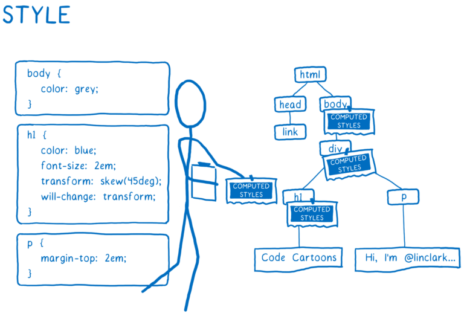
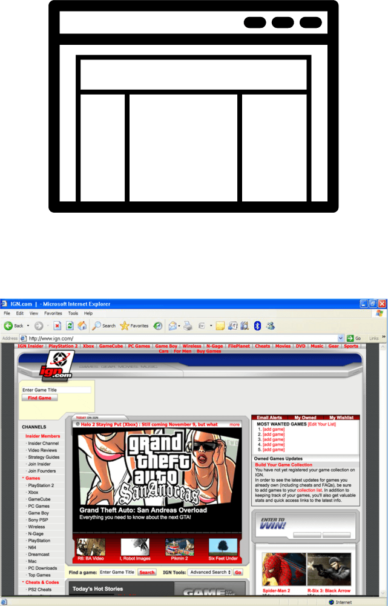
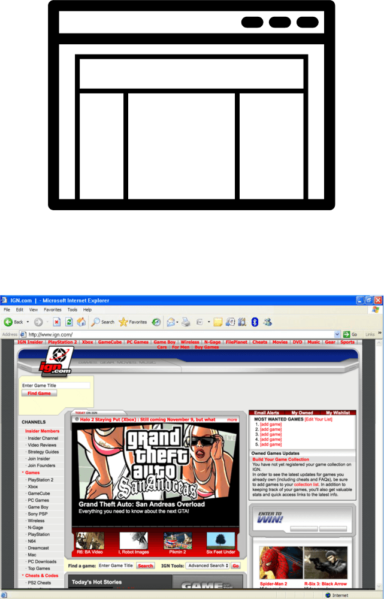
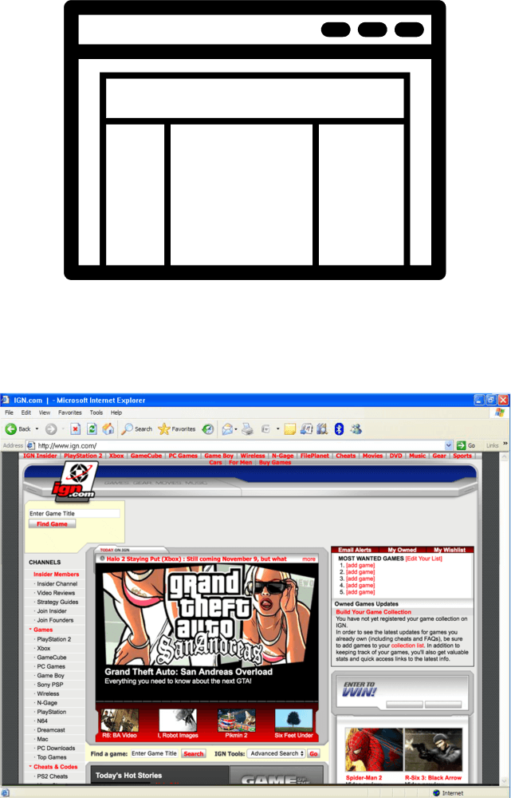

Grid is the new black
Revolutionising visual design on the web
Rendering engines 101
Reads HTML and CSS files and turns them into pixels on the screen
Images and explanations by
Lin Clark
Parse the files into objects the browser can understand, including the DOM
Images and explanations by
Lin Clark

Figure out what the elements should look like
Images and explanations by
Lin Clark
Figure out dimensions for each node and where it goes on the screen
Images and explanations by
Lin Clark
Paint the different boxes
Images and explanations by
Lin Clark
Composite the different layers into one image and render on screen
Images and explanations by
Lin Clark
Web layouts over the years

Thank you!
https://www.chenhuijing.com
@hj_chen
@hj_chen
@huijing


 
